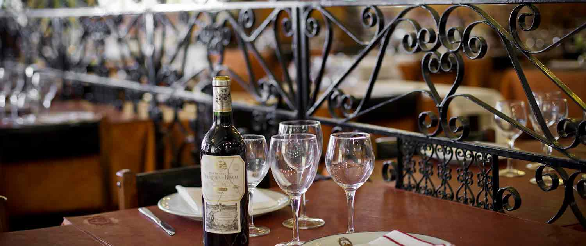

El restaurante más antiguo de la Ciudad d rafaela, fundado en 1960, te invita a disfrutar de su típica y tradicional comida española. El clásico restaurante está ubicado en sgto.Cabral y Belgrano, te ofrece los mejores pescados y mariscos, cocina española y tradicional